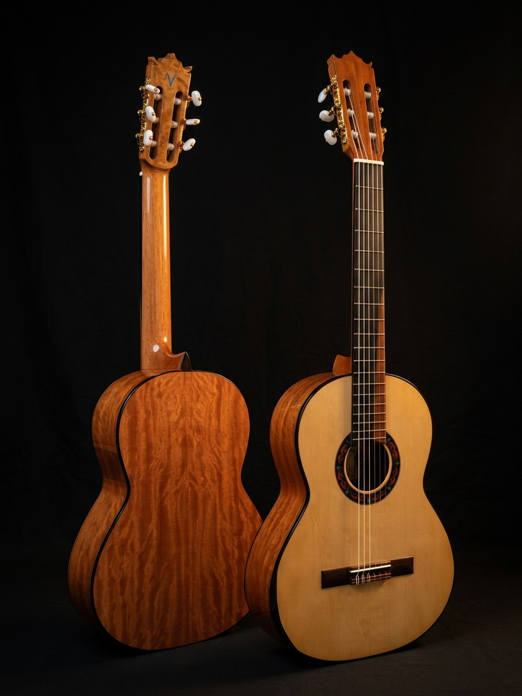
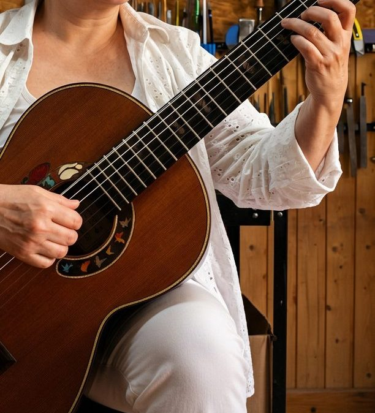
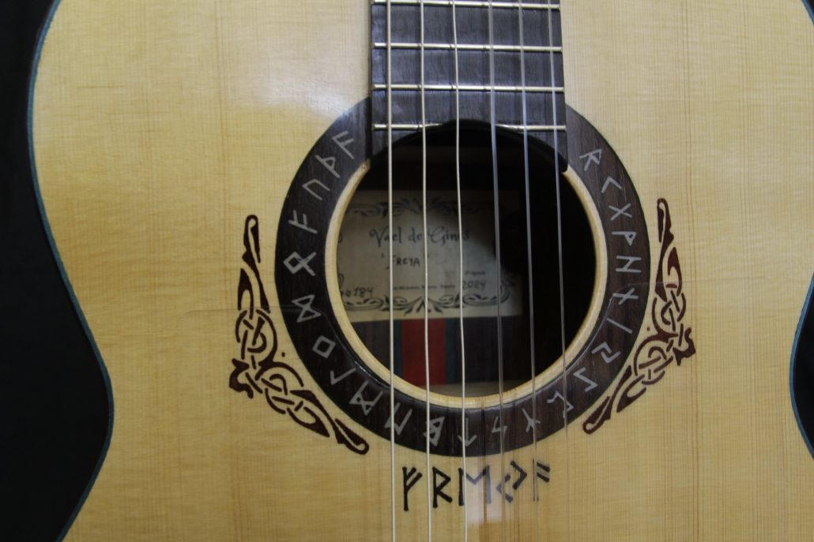
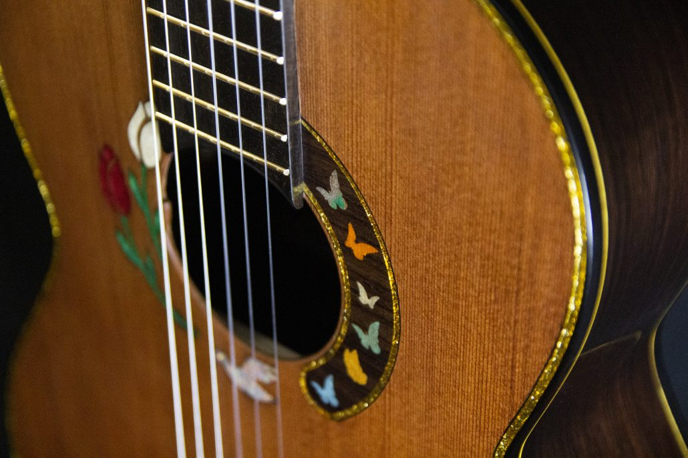
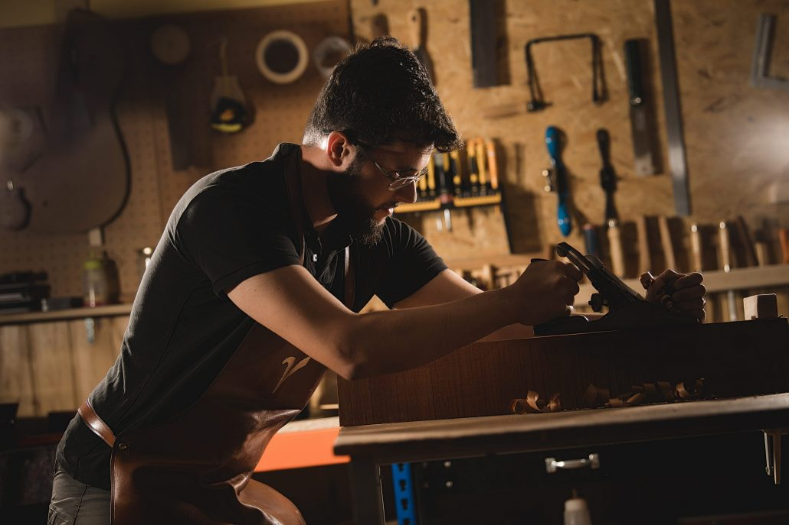

Paloma
Guitarra de autorTono cristalino y respuesta inmediata. Abeto alemán y palosanto de Madagascar.
Descubrir la piezaLuthier artesanal · Los Alcázares, Murcia
Guitarras personalizadas e instrumentos de folclore. Cada pieza nace de una conversación, de maderas seleccionadas con paciencia y del tiempo que exige el oficio.

El oficio
Soy Ginés Martínez, luthier artesanal en Los Alcázares (Murcia) y creador de Vael de Ginés. En mi taller construyo guitarras personalizadas e instrumentos de folclore combinando el conocimiento del oficio, la selección de materiales y el trabajo manual.
No existen dos músicos iguales. Por eso cada proyecto comienza escuchando cómo tocas, qué buscas y qué necesitas sentir con el instrumento. A partir de ahí, diseño y construyo una pieza con identidad propia: tuya.

El taller · Los Alcázares, Murcia
Dos caminos, un mismo oficio
Diseñadas junto a cada músico: maderas, proporciones, ergonomía y ornamentación pensadas para tu forma de tocar.
Descubre las guitarras 02 — Folclore
Guitarros, laúdes y bandurrias construidos con respeto por la tradición y por la música para la que fueron concebidos.
Descubre los instrumentosColección de autor
Cada guitarra parte de una idea diferente. La combinación de materiales, el diseño ornamental y las decisiones de construcción dan lugar a instrumentos irrepetibles.
Tono cristalino y respuesta inmediata. Abeto alemán y palosanto de Madagascar.
Descubrir la pieza
Proyección armónica y timbre denso. Cedro canadiense, koa hawaiana y pan de oro.
Descubrir la pieza
Graves majestuosos y nitidez lírica. Pícea de Sitka y cocobolo exótico.
Descubrir la pieza
Equilibrio y timbre orgánico. Abeto de los Alpes y barniz a la goma laca.
Descubrir la pieza
Ataque veloz y graves aterciopelados. Nogal español y alma de fibra de carbono.
Descubrir la pieza
Sustain infinito y armónicos etéreos. Arce rizado y roseta con nácar natural.
Descubrir la pieza
El proceso artesanal
Nos reunimos para comprender tu visión, tu estilo de interpretación y definir la personalidad sonora del instrumento.
Trazamos los planos acústicos y ergonómicos, diseñando la arquitectura interna y las proporciones de la guitarra.
Elegimos maderas nobles envejecidas que ofrezcan la resonancia, estabilidad y estética que el proyecto requiere.
Ensamblado enteramente a mano en el taller, esculpiendo cada veta con herramientas tradicionales.
Ajuste de acción definitivo, barnizado orgánico a muñequilla y puesta a punto antes de la entrega.

El oficio se aprende con las manos
El taller
No se trata solo de construir a mano, sino de conocer profundamente el oficio y saber cómo aplicarlo en cada momento.
Combino técnicas tradicionales, trabajo manual y herramientas de precisión, incorporando la tecnología cuando permite mejorar el resultado. La madera, la acústica y el tiempo marcan el ritmo del taller.
El violonchelo que construyó Vael posee un timbre aterciopelado y una potencia que llena cualquier sala. Su dedicación se siente en cada nota.Beatriz Méndez · Violonchelista de cámara
Cuaderno del taller

Guitarra clásica y flamenca de luthier: lo que todo amante de la guitarra debe saber Si estás pensando en encargar una guitarra personalizada o simplemente te interesa profundizar…
Leer artículo
El Pau Ferro, también conocido como palisandro brasileño boliviano, es una de las maderas más valoradas por su aspecto elegante, su versatilidad tonal y su estabilidad estructural.…
Leer artículo
Vivimos un momento fascinante en la historia de la luthería. Los avances tecnológicos han puesto al alcance de un luthier independiente herramientas que hace apenas unas décadas pa…
Leer artículo
Hablemos de tu proyecto
Cuéntame qué instrumento tienes en mente, cómo lo vas a utilizar y qué necesitas encontrar en él. Estudiaremos las posibilidades y te facilitaré toda la información para dar el siguiente paso.